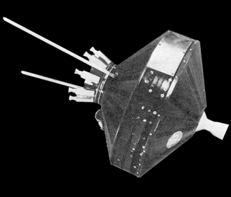
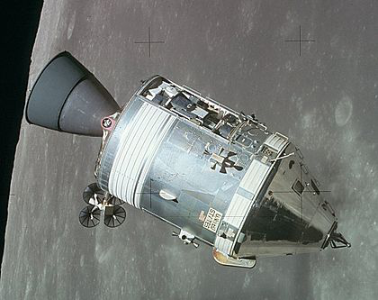
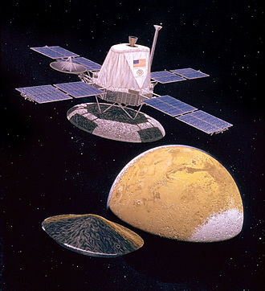
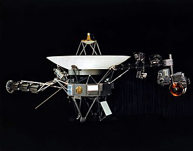
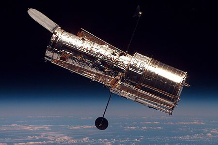
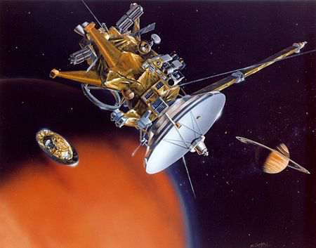
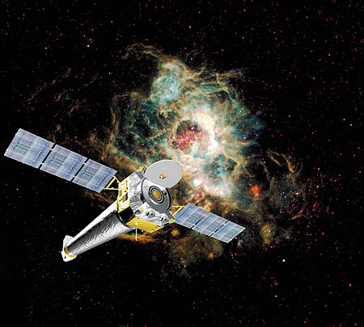
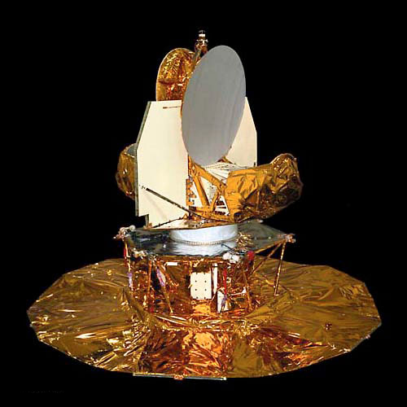
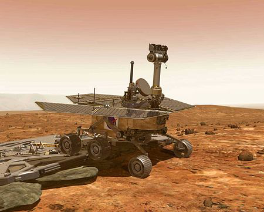
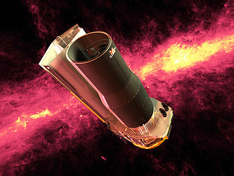

1958
Pioneer

The Pioneer programs were two series of United States lunar and planetary space probes exploration.
The first program, which ran from 1958 to 1960, unsuccessfully attempted to send spacecraft to orbit the Moon,
successfully sent one spacecraft to fly by the Moon, and successfully sent one spacecraft to investigate interplanetary space between the orbits of Earth and Venus.
1969
Apollo

The Apollo program, also known as Project Apollo, was the third United States human spaceflight program carried out by the National Aeronautics and Space Administration (NASA), which succeeded in landing the first men on the Moon from 1969 to 1972.
It was first conceived during Dwight D. Eisenhower's administration as a three-person spacecraft to follow the one-person Project Mercury, which put the first Americans in space.
1975
Viking

The Viking program consisted of a pair of American space probes sent to Mars, Viking 1 and Viking 2.
Each spacecraft was composed of two main parts: an orbiter designed to photograph the surface of Mars from orbit, and a lander designed to study the planet from the surface. The orbiters also served as communication relays for the landers once they touched down.
1977
Voyager

The Voyager program is an American scientific program that employs two robotic probes, Voyager 1 and Voyager 2, launched in 1977 to take advantage of a favorable alignment of Jupiter, Saturn, Uranus, and Neptune.
Although their original mission was to study only the planetary systems of Jupiter and Saturn, Voyager 2 continued on to Uranus and Neptune. The Voyagers now explore the outer boundary of the heliosphere in interstellar space.
1990
Hubble

The Hubble Space Telescope (often referred to as HST or Hubble) is a space telescope that was launched into low Earth orbit in 1990 and remains in operation.
It was not the first space telescope but it is one of the largest and most versatile, well known both as a vital research tool and as a public relations boon for astronomy.
The Hubble telescope is named after astronomer Edwin Hubble and is one of NASA's Great Observatories, along with the Compton Gamma Ray Observatory, the Chandra X-ray Observatory, and the Spitzer Space Telescope.
1997
Cassini–Huygens

The Cassini–Huygens space-research mission, commonly called Cassini, involved a collaboration between NASA, the European Space Agency (ESA), and the Italian Space Agency (ASI) to send a probe to study the planet Saturn and its system, including its rings and natural satellites.
The Flagship-class robotic spacecraft comprised both NASA's Cassini probe and ESA's Huygens lander, which landed on Saturn's largest moon, Titan. Cassini was the fourth space probe to visit Saturn and the first to enter its orbit.
1999
Chandra

The Chandra X-ray Observatory (CXO), previously known as the Advanced X-ray Astrophysics Facility (AXAF), is a Flagship-class space telescope launched aboard the Space Shuttle Columbia during STS-93 by NASA on July 23, 1999.
Chandra is sensitive to X-ray sources 100 times fainter than any previous X-ray telescope, enabled by the high angular resolution of its mirrors. Since the Earth's atmosphere absorbs the vast majority of X-rays, they are not detectable from Earth-based telescopes; therefore space-based telescopes are required to make these observations.
2001
WMAP

The Wilkinson Microwave Anisotropy Probe (WMAP), originally known as the Microwave Anisotropy Probe (MAP), was a spacecraft operating from 2001 to 2010 which measured temperature differences across the sky in the cosmic microwave background (CMB)
– the radiant heat remaining from the Big Bang. Headed by Professor Charles L. Bennett of Johns Hopkins University, the mission was developed in a joint partnership between the NASA Goddard Space Flight Center and Princeton University.
2003
Mars Rover

NASA's Mars Exploration Rover (MER) mission was a robotic space mission involving two Mars rovers, Spirit and Opportunity exploring the planet Mars.
It began in 2003 with the launch of the two rovers to explore the Martian surface and geology; both landed on Mars at separate locations in January 2004.
Both rovers far outlived their planned missions of 90 Martian solar days: MER-A Spirit was active until March 22, 2010, while MER-B Opportunity was active until June 10, 2018 and holds the record for the longest distance driven by any off-Earth wheeled vehicle.
2003
Spitzer

The Spitzer Space Telescope (SST), formerly the Space Infrared Telescope Facility (SIRTF), was an infrared space telescope launched in 2003 and retired on 30 January 2020.
The planned mission period was to be 2.5 years with a pre-launch expectation that the mission could extend to five or slightly more years until the onboard liquid helium supply was exhausted.
This occurred on 15 May 2009. Without liquid helium to cool the telescope to the very low temperatures needed to operate, most of the instruments were no longer usable.
 Sasstronaut
Sasstronaut